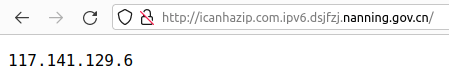

| Ник | Пост | Дата |
|---|---|---|
| ValdikSS | Found an interesting Chinese web-proxy on gov.cn domain, which could be used to test website availability from China.
Example:  | 2021-12-04T20:44:13.305Z |
| ValdikSS | Doesn’t work anymore. | 2022-04-22T18:24:13.185Z |
| Datura_metel(Datura metel) | .com → .ex1 | 2023-07-06T18:17:37.594Z |
| ValdikSS | Doesn’t work anymore as well. | 2024-03-19T07:28:32.821Z |
| ValdikSS | Found working ones
| 2024-03-19T07:34:30.172Z |